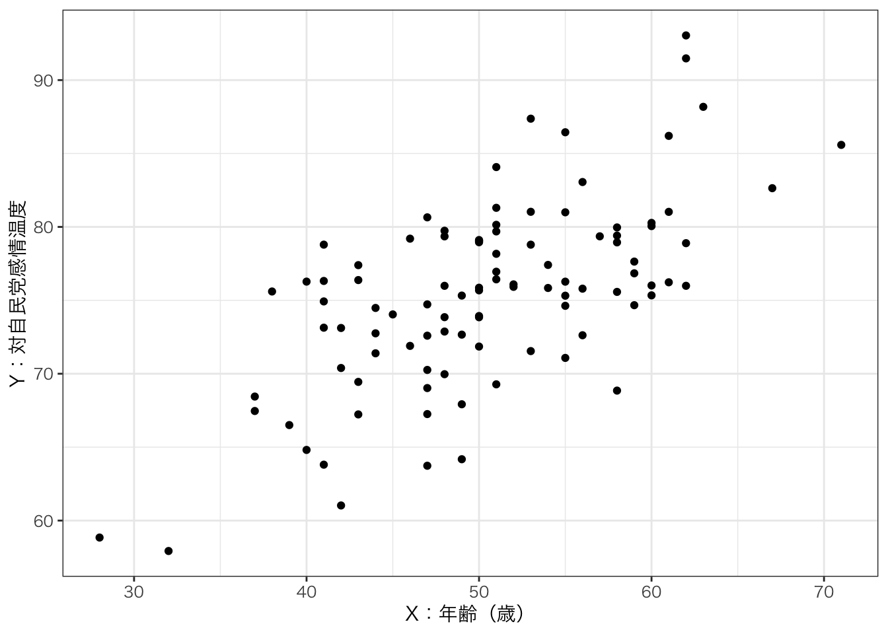
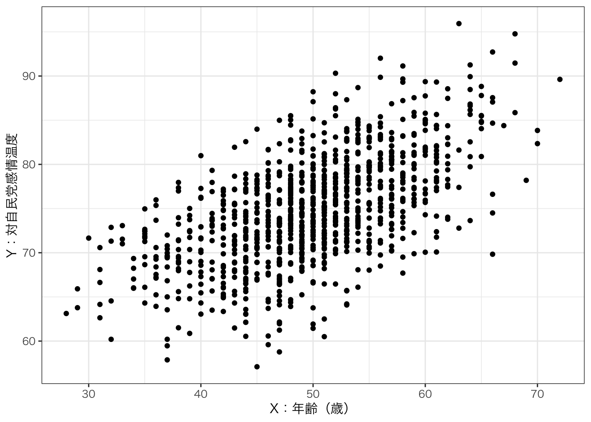

04/小テスト問題
締切：2026年10月30日24:00
以下の文章を読み、続く問題に答えなさい。なお回答はWebClass上とする。
文章
いま、日本人を対象に、年齢が自民党に対する感情に与える影響を知るため、ランダムサンプリングした回答者に対してアンケートを行うことを考えよう。アンケートでは満年齢とともに、自民党に対する感情温度を回答してもらう。感情温度を尋ねる質問は以下の通りである。
- 【質問】あなたは自由民主党（自民党）に対してどのような感情を持っていますか。0度（冷たい：非常に強い反感）から100度（暖かい：非常に強い好感）の間の数字で答えてください。
年齢（\(X\)）と対自民党感情温度の関係(\(Y\))を\(対自民党感情温度_{i}=\beta_{0}+\beta_{1}年齢_{i}+\varepsilon_{i}\)とモデル化した上で、100人の回答者からなる標本（A）と2000人からなる回答の標本（B）それぞれのデータを分析してみよう。まず、それぞれの標本データにおける散布図は以下の通りとなった。


問題
問１：2つの散布図からわかる大まかな傾向は何か。正しいものを以下から1つ選びなさい。
- 年齢が高いほど自民党に対する好感度は高くなりそうである。
- 年齢と自民党に対する感情温度は関係なさそうである。
- 年齢が高いほど自民党に対する反感が高くなりそうである。
問２：標本（A）と標本（B）それぞれにおける傾きのOLS推定値\(\hat{\beta}_{1}\)の符号はどのようになるか。正しい組み合わせを以下から1つ選びなさい。
- 標本（A）：正、標本（B）：正
- 標本（A）：正、標本（B）：負
- 標本（A）：負、標本（B）：正
- 標本（A）：負、標本（B）：負
問３：年齢と誤差項に相関がない場合、傾き（回帰係数）のOLS推定値\(\hat{\beta}_{1}\)の分散（\(\operatorname{var}(\hat{\beta_{1}})\)）を計算する式として正しいものはどれか。
- \(\operatorname{var}(\hat{\beta_{1}})=\frac{\sum(X_i-\bar{X})(Y_i-\bar{Y})}{\sum(X_i-\bar{X})^2}\)
- \(\operatorname{var}(\hat{\beta_{1}})=\frac{\hat{\sigma}^2}{N\times\operatorname{var}(X)}\)
- \(\operatorname{var}(\hat{\beta_{1}})=\frac{\sum(Y_i-\hat{Y}_i)^2}{N-k}\)
問４：問３の正答で示される分散の標準式を考えなさい。この式から\(\hat{\beta}_{1}\)の分散について一般にどのようなことが言えるか。正しい説明を以下から全て選びなさい。
- サンプルサイズが大きくなるほど\(\beta_{1}\)の分散は小さくなる。
- 独立変数の分散が大きいほど\(\beta_{1}\)の分散は小さくなる。
- 回帰直線から各データが離れているほど\(\beta_{1}\)の分散は小さくなる。
- 回帰直線が右肩上がりであるほど\(\beta_{1}\)の分散は小さくなる。
問５：2つのサンプルにおける傾きの推定値\(\hat{\beta}_{1}\)の精度について考える。母集団における真の傾き\(\beta_{1}\)に確率的に近い推定値が得られると思われるのは、標本（A）と標本（B）どちらで分析した場合だろうか。正しいものをどちらか選びなさい。
- 標本（A）
- 標本（B）
問６：問５のように言えるのはなぜだろうか。正しい説明を以下から1つ選びなさい。
- 標本（A）よりも標本（B）の方が回帰分散が小さいから。
- 標本（A）よりも標本（B）の方がサンプルサイズが大きいから。
- 標本（A）よりも標本（B）の方が独立変数の分散が大きいから。
問７：また問３の正答で示される分散の標準式を考えなさい。この分析において標準式が使えない可能性はどのような原因によるものだろうか。正しい説明を以下から全て選びなさい。
- 都道府県ごとに自民党を支持する雰囲気が異なる。
- 年齢が低くなるほど、自民党に対する感情がばらつく。
- 年齢が高くなるにつれて自民党に対する感情が高まるというトレンドが生じている。
- 年齢と誤差項の間に相関が生じている。